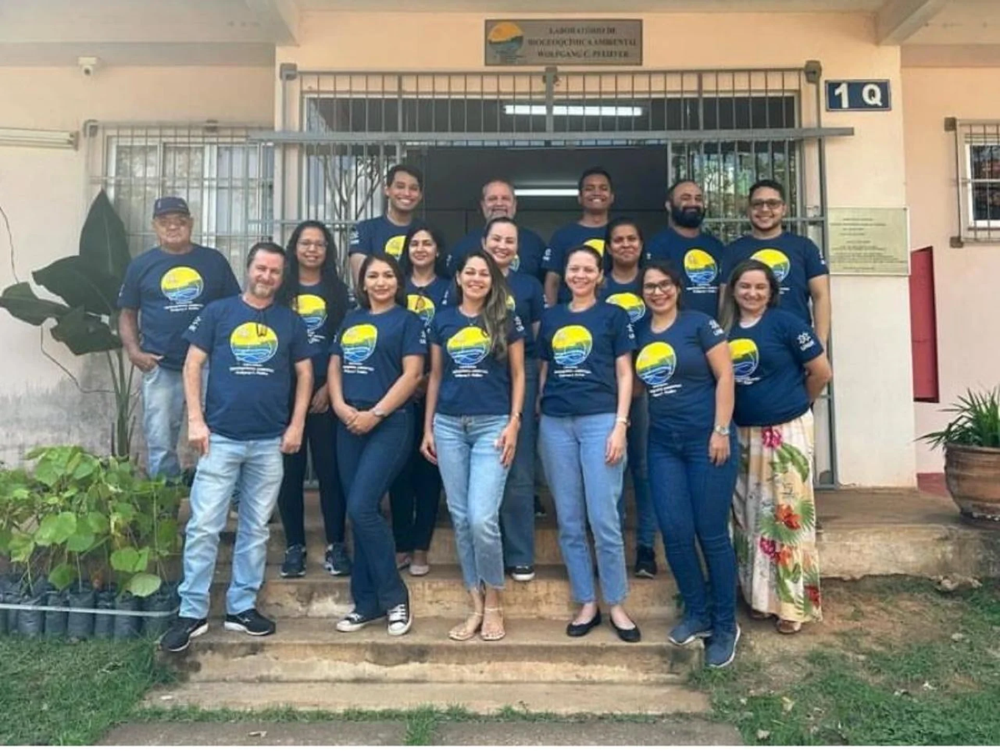
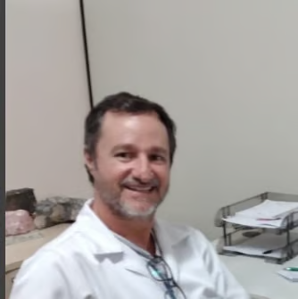

Laboratório de BioGeoQuímica
Wolfgang C. Pfeiffer
OBJETIVOS
Geoquímico
Determinar a abundância de elementos naturais no tempo e no espaço por meio de técnicas analíticas, contribuindo para a compreensão da origem, idade e estrutura dos ecossistemas.
Socioambiental
Fornecer subsídios aos diversos campos da saúde e proteção humana. Buscar conhecimento para um meio ambiente limpo e saudável.
Biológico / Segurança
Entender os processos biológicos e suas interações com os diversos elementos químicos, ampliando o conhecimento das redes ecológicas.
Técnico / Científico
Inovação em processos e produtos por meio do desenvolvimento e implementação de novas tecnologias, otimizando desempenho e resultados.
ATUAÇÃO
Projetos
Conheça os projetos de pesquisa desenvolvidos pelo laboratório nas áreas de saúde ambiental e biogeoquímica amazônica.
Explorar →Produções Acadêmicas
Trabalhos de conclusão, dissertações, teses e orientações desenvolvidas junto ao laboratório.
Explorar →Publicações
Artigos científicos publicados em periódicos nacionais e internacionais.
Explorar →Eventos
Participação e organização de congressos, seminários e ações de extensão.
Explorar →Coordenação
